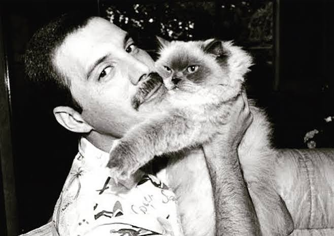
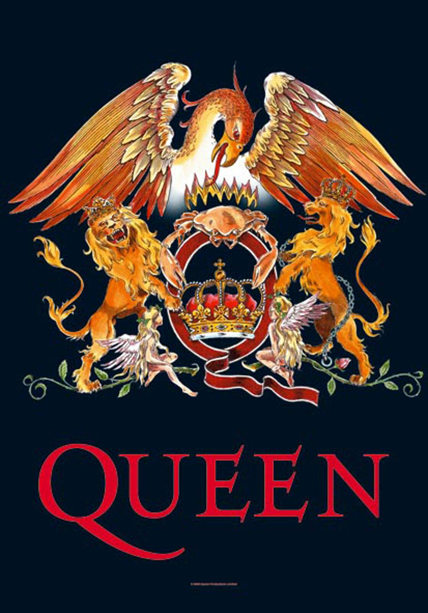
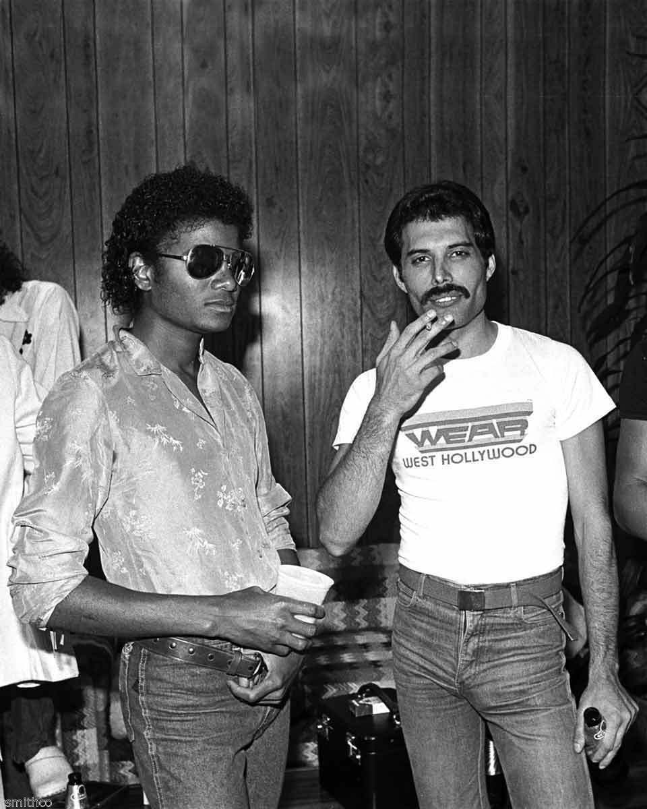
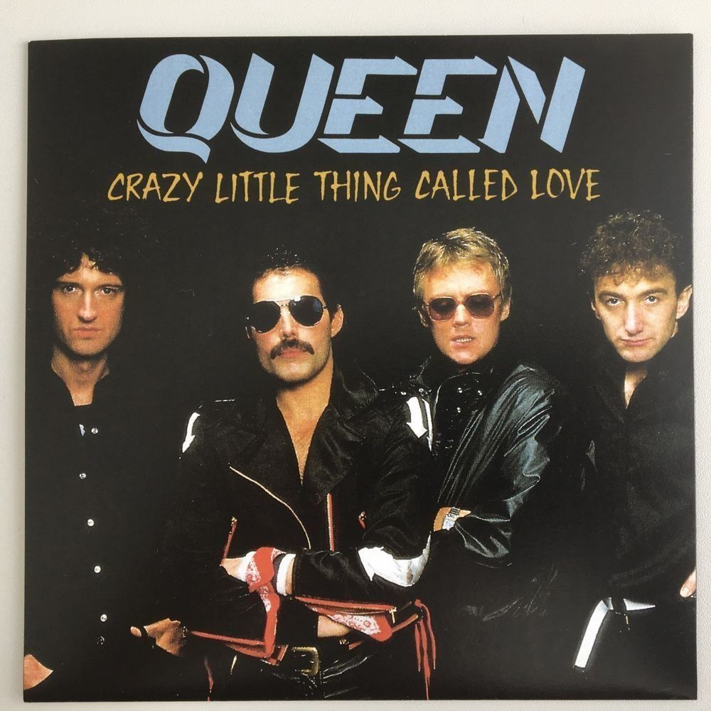
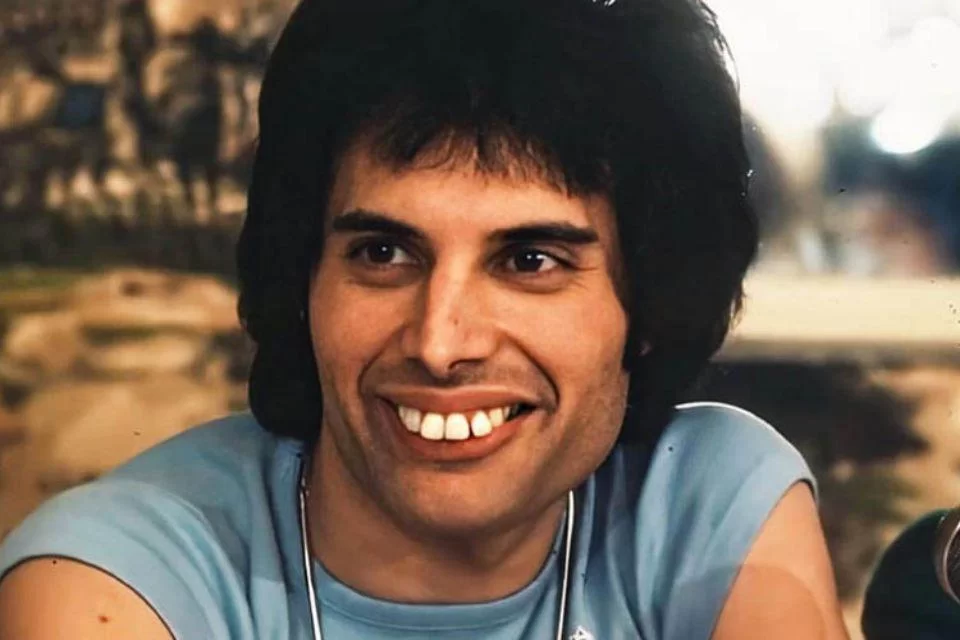
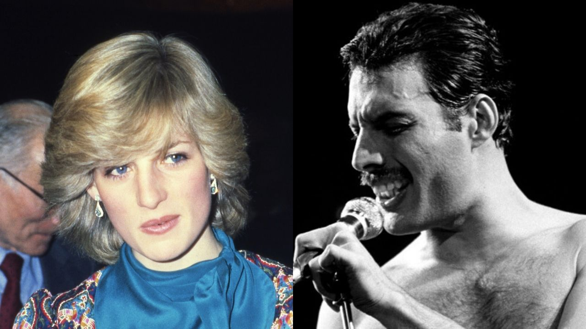
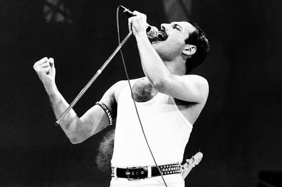

Por trás dos holofotes e da presença de palco eletrizante, a vida de Freddie Mercury guardava segredos e peculiaridades que iam muito além do que os olhos do público podiam ver. Mesmo sendo uma das figuras mais fotografadas e comentadas do mundo, o vocalista do Queen tinha um lado reservado, cheio de hábitos únicos, talentos ocultos e histórias surpreendentes que pouca gente conhece. Descubra a seguir alguns dos fatos mais fascinantes e curiosos sobre a vida íntima e criativa desse ícone eterno.
Freddie teve vários gatos ao longo da vida e os tratava como membros da família. Alguns deles se chamavam Delilah, Oscar, Tiffany e Goliath. Quando ele estava viajando em turnê, ele ligava para casa e pedia para a sua amiga Mary Austin segurar o telefone perto do ouvido dos gatos para que ele pudesse conversar com eles. Ele até dedicou a música "Delilah" à sua gata favorita.

Freddie estudou Arte e Design Gráfico no Ealing Art College, em Londres, onde se formou em 1969. Durante esse período, desenvolveu habilidades em ilustração, tipografia e composição visual, que mais tarde influenciariam a identidade do Queen. Seu talento como designer ficou evidente quando criou o icônico brasão do Queen, inspirado no brasão real britânico. O desenho reúne os signos do zodíaco dos quatro integrantes da banda: dois leões (Roger Taylor e John Deacon), um caranguejo (Brian May) e duas fadas representando o signo de Virgem (Freddie Mercury). No centro, está a letra "Q", coroada por uma fênix, símbolo de força e renascimento.

Nos anos 1980, Freddie Mercury e Michael Jackson, se tornaram amigos e chegaram a gravar algumas músicas juntos, incluindo "There Must Be More to Life Than This", "State of Shock" e "Victory". Apesar da admiração mútua, a parceria não avançou. Um dos motivos mais curiosos foi que Freddie teria ficado incomodado com os hábitos excêntricos de Michael, especialmente quando uma de suas lhamas apareceu durante as sessões de gravação. Segundo a história mais famosa, Freddie chegou a pedir ao seu empresário para tirá-lo dali porque estava "gravando com uma lhama".

Em 1979, Freddie Mercury estava relaxando em uma banheira de um hotel em Munique, na Alemanha, quando a melodia e a ideia da música apareceram em sua cabeça. Em cerca de 10 a 15 minutos, Freddie já tinha a estrutura principal da canção pronta. Apesar de não se considerar um grande violonista, ele criou uma sequência de acordes simples que deu à música um estilo inspirado no rockabilly dos anos 1950, uma homenagem a artistas como Elvis Presley. Lançada em 1979, "Crazy Little Thing Called Love" tornou-se um enorme sucesso e foi o primeiro single do Queen a alcançar o primeiro lugar na Billboard Hot 100, nos Estados Unidos.

Freddie tinha quatro dentes extras na parte de trás da boca, o que empurrava seus dentes da frente para frente (sua marca registrada). Apesar de ter dinheiro de sobra e ser muito vaidoso, ele nunca quis fazer nenhuma cirurgia ou tratamento ortodôntico porque tinha um medo profundo de que a mudança na sua boca alterasse a acústica e o alcance da sua voz.

Uma das histórias mais famosas da noite londrina nos anos 80 é que Freddie Mercury e o comediante Cleo Rocos disfarçaram a Princesa Diana de homem — vestindo-a com uma jaqueta militar, um boné e óculos escuros — para que ela pudesse entrar e se divertir anonimamente em um famoso bar local sem ser perseguida pelos paparazzi. E o plano funcionou perfeitamente!

Uma das identidades visuais mais fortes de Freddie Mercury no palco era ele cantando com o microfone preso apenas à metade de um pedestal (a haste de metal). Isso aconteceu totalmente por acidente nos primeiros anos do Queen. Durante um show, o pedestal do microfone quebrou no meio da apresentação. Em vez de trocar por um novo, Freddie continuou o show carregando a haste quebrada e percebeu que aquilo dava a ele muito mais liberdade para andar, dançar e usar o objeto como uma extensão do seu próprio corpo (quase como uma espada ou uma bengala de teatro). Ele gostou tanto do efeito que adotou o "pedestal quebrado" para o resto da vida.
